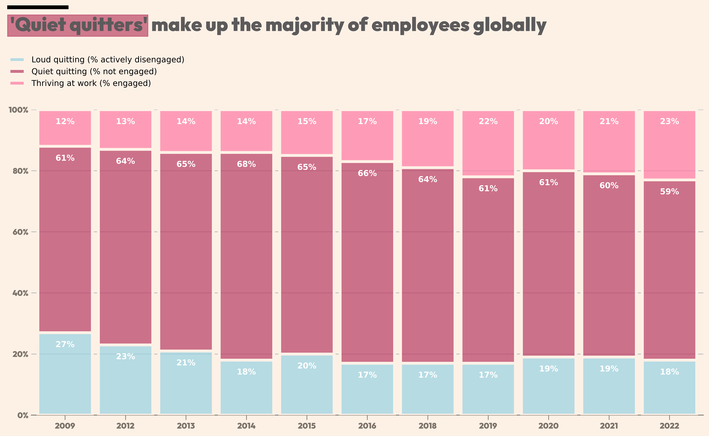
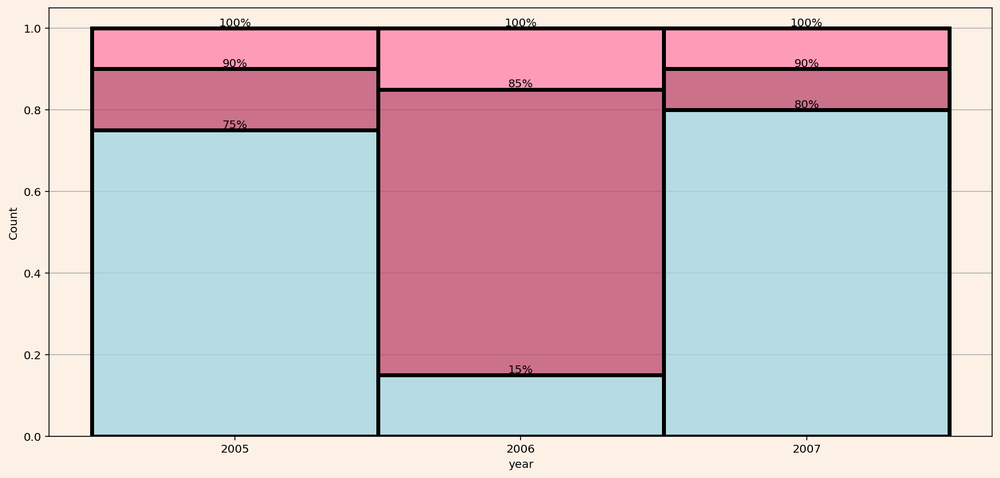

import pandas as pd
import matplotlib.pyplot as plt
from matplotlib.patches import Rectangle
import seaborn as sns;Estilo “Financial Times” en Matplotlib
codigo
python
gráficos
matplotlib
Financial Times
Por qué? No hay por qué.
https://medium.com/@romandogadin/style-your-visuals-like-the-financial-times-using-plotly-3e7f1d6e293d
data_quiet_quitters = [['2009','thriving',0.12],['2012','thriving',0.13],['2013','thriving',0.14],
['2014','thriving',0.14],['2015','thriving',0.15],['2016','thriving',0.17],
['2018','thriving',0.19],['2019','thriving',0.22],['2020','thriving',0.20],
['2021','thriving',0.21],['2022','thriving',0.23],
['2009','quiet_q',0.61],['2012','quiet_q',0.64],['2013','quiet_q',0.65],
['2014','quiet_q',0.68],['2015','quiet_q',0.65],['2016','quiet_q',0.66],
['2018','quiet_q',0.64],['2019','quiet_q',0.61],['2020','quiet_q',0.61],
['2021','quiet_q',0.60],['2022','quiet_q',0.59],
['2009','loud_q',0.27],['2012','loud_q',0.23],['2013','loud_q',0.21],
['2014','loud_q',0.18],['2015','loud_q',0.20],['2016','loud_q',0.17],
['2018','loud_q',0.17],['2019','loud_q',0.17],['2020','loud_q',0.19],
['2021','loud_q',0.19],['2022','loud_q',0.18],
]
# create data frame
df = pd.DataFrame(
data=data_quiet_quitters,
columns=['year','type','count'])# https://python-graph-gallery.com/custom-fonts-in-matplotlib/
from matplotlib.font_manager import FontProperties
# !!! change it to your path
personal_path = '/home/mato/.local/share/fonts/'
# get normal font and store it in `fira_sans_regular`
font_path = personal_path + 'Outfit-Black.ttf'
outfit = FontProperties(fname=font_path)Falta: - Font outfit, mas ‘bold’, pero no tan ‘bold’ - Thicks hacia abajo en el eje x - Leyendas sin recuadro
Listar fonts en terminal: fc-list | grep “Outfit”
labels=''
# Definimos la paleta de color para las barras
# colors = ["#ae4e6b","#aad3e3","#ef88a8"]
colors = ['#ff80a8','#bc466b', '#9fd4e2']
color_map = {
# "lineas": '#e4d9d0',
"lineas": '#7d7369',
"fondo": '#fdf1e6',
"titulo":'#5c5a5b'
}
sns.set_palette(sns.color_palette(colors))
fig, ax = plt.subplots(figsize=(15, 7),
dpi=450,
facecolor = color_map['fondo']) # Color de fondo del gráfico
ax = sns.histplot(df, x='year',
hue='type',
weights='count',
multiple='stack',
shrink=0.9,
edgecolor=color_map['fondo'], # Color del borde de las barras
linewidth=3.5,
zorder=3
)
# Margen
ax.margins(0.01, 0)
# Definimos grid sólo horizontal
# plt.grid(False)
ax.grid(axis='y', zorder=0)
# Color de fondo del canvas
ax.set_facecolor(color_map['fondo'])
# Color de la línea del eje x
ax.spines['bottom'].set_color(color_map['lineas'])
# Labels sobre las barras
# https://stackoverflow.com/questions/41296313/stacked-bar-chart-with-centered-labels
# for c in ax.containers:
# ax.bar_label(c, fmt=lambda x: f'{x:.0%}' if x > 0 else '',
# color='w',
# weight='bold',
# padding=-20,
# alpha=1)
for c in ax.containers:
ax.bar_label(c, fmt=lambda x: f'{x:.0%}' if x > 0 else '',
# label_type='center',
color='w',
weight='bold',
padding=-20,)
# Longitud del tick del eje y
ax.xaxis.set_tick_params(
length=6,
color= color_map['lineas']
)
ax.yaxis.set_tick_params(
length=0,
color= color_map['lineas']
)
# Labels de los ticks del eje y
ax.set_yticks([0,.2,.40,.60,.80,1])
ax.set_yticklabels(['0%','20%','40%','60%','80%','100%'])
# Font de los ticks
plt.xticks(font=outfit)
plt.yticks(font=outfit);
# Colores de los ticks names
ax.tick_params(colors=color_map['lineas']) # Puede incluir axis='x' para sólo colorear el eje x
# No ponemos titulo al eje Y ni al X
plt.ylabel('')
plt.xlabel('')
# Eliminamos el eje x (top), y (right) e y (left)
ax.spines['bottom'].set_linewidth(1)
ax.spines['right'].set_visible(False)
ax.spines['top'].set_visible(False)
ax.spines['left'].set_visible(False)
# Eliminamos la leyenda que Matplolib inserta por defecto
ax.get_legend().remove()
# Leyendas
fig.legend(
bbox_to_anchor=(0.31, 1.03),
fancybox = True,
fontsize='medium',
labels=['Loud quitting (% actively disengaged)',
'Quiet quitting (% not engaged)',
'Thriving at work (% engaged)',],
edgecolor = color_map['fondo'],
facecolor = 'none'
)
# Coordinadas para linea negra y cuadro ojo
y_pos = 1.25
x_pos = -0.95
# Linea negra sobre título
ax.add_patch(Rectangle((x_pos,y_pos+0.08),1,0.01,color='black', clip_on=False))
# Cuadro rojo en título
ax.add_patch(Rectangle((x_pos,y_pos-0.01),2.32,0.07,color='#bc4668', clip_on=False, alpha=0.7))
# Títulos
plt.suptitle("'Quiet quitters' make up the majority of employees globally",
fontsize=24,
y=y_pos-0.14, x=0.41,
color=color_map['titulo'],
font=outfit,
);

data = [['2005','A',.10],['2006','A',.15],['2007','A',.10],
['2005','B',.15],['2006','B',.70],['2007','B',.10],
['2005','C',.75],['2006','C',.15],['2007','C',.80]
]
df = pd.DataFrame(
data=data,
columns=['year','type','count'])fig, ax = plt.subplots(figsize=(15, 7),facecolor = '#fdf1e6')
ax.set_facecolor('#fdf1e6')
ax = sns.histplot(df, x='year',
hue='type',
weights='count',
multiple='stack',
shrink=1,
linewidth=3.5,
zorder=3
)
# Definimos grid sólo horizontal
# plt.grid(False)
ax.grid(axis='y', zorder=0)
ax.get_legend().remove()
for c in ax.containers:
ax.bar_label(c, fmt=lambda x: f'{x:.0%}' if x > 0 else '')